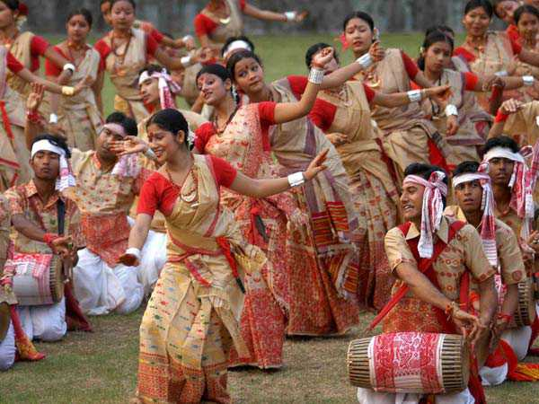
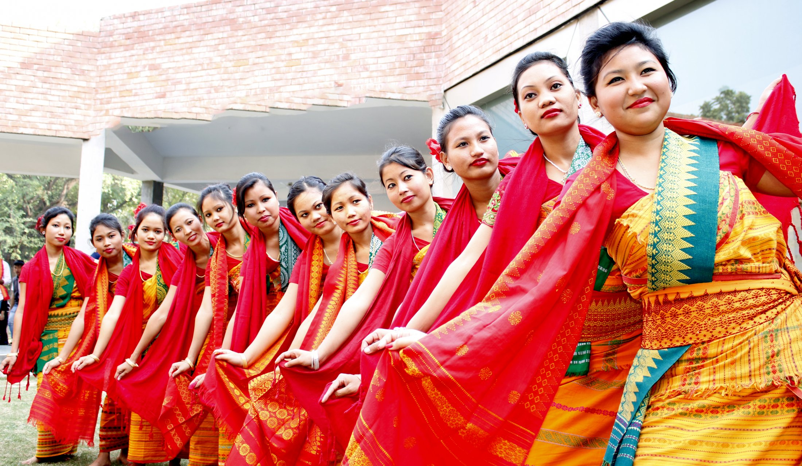

The culture of Assam is a vibrant and diverse blend of indigenous traditions, artistic heritage, religious
practices, and external influences that have evolved over centuries. Known for its lush landscapes, tea
gardens, and the mighty Brahmaputra River, Assam is home to numerous ethnic groups, each contributing to the
state's rich cultural mosaic. From its festivals to its music, dance, crafts, and cuisine, Assam offers a
unique cultural experience deeply rooted in history, spirituality, and nature.
1. Ethnic Diversity and Traditions:
Assam is home to a variety of ethnic communities, including the Assamese, Bodos,
Mishing, Karbi, Ahoms, Tea Tribes, and several other indigenous groups.
This ethnic diversity has shaped the state's cultural landscape, with each community contributing
its unique language, customs, and traditions.
-
The Assamese People: The Assamese, primarily living in the Brahmaputra Valley, are
the
largest ethnic group in Assam. They speak the Assamese language, which is derived
from the
Indo-Aryan language family and is the official language of the state. The Assamese culture
is a mix
of Vaishnavite Hinduism, folk traditions, and historical influences from the Ahom kingdom,
which
ruled Assam for 600 years.
-
Bodo Culture: The Bodos, one of the largest indigenous groups, have a distinct
cultural identity. Their language belongs to the Tibeto-Burman family, and their traditions
revolve
around nature worship, agricultural practices, and unique forms of music and dance,
including the
Bagurumba dance.
2. Festivals:
Festivals are an integral part of Assam's cultural life, celebrated with great enthusiasm and joy.
The major festivals in Assam are primarily related to agriculture, religion, and seasonal changes.
-
Bihu: The most important festival of Assam, Bihu is celebrated thrice a year:
Rongali (Bohag) Bihu in April to mark the Assamese New Year and the onset of the
sowing
season, Kongali (Kati) Bihu in October to mark a period of quiet and austerity in the
fields,
and Bhogali (Magh) Bihu in January, which celebrates the harvest. Each Bihu has its
own set
of customs, songs, and dances, with Bihu dance and Bihu songs (Bihu Geet)
being
central to the celebrations.
-
Durga Puja: Though widely celebrated across India, Durga Puja in Assam is a
significant festival, especially in urban areas like Guwahati. The festival brings the
community
together to worship Goddess Durga through grand processions, cultural performances, and
rituals.
-
Baishagu: The Bodos celebrate Baishagu, which is a springtime festival
that
coincides with Bohag Bihu. It is marked by traditional dance, music, and feasting.


3. Dance and Music:
Assamese culture is renowned for its traditional dance forms and music, which are often reflective
of the state's festivals, folklore, and religious practices.
-
Bihu Dance: One of the most popular and energetic folk dances, the Bihu dance
is
performed during the Bohag Bihu festival. Both men and women participate, with dancers
moving
rhythmically to the beats of traditional instruments like the dhol, pepa (a
buffalo
horn pipe), and gagana (a bamboo instrument).
-
Sattriya Dance: Introduced by the saint-scholar Srimanta Sankardeva in the
15th
century as part of the Vaishnavite tradition, Sattriya is a classical dance form that
is both
devotional and narrative. It is performed in Sattras (Vaishnavite monasteries) and is
a blend
of drama, music, and dance, depicting mythological stories.
-
Bodo Music and Dance: The Bodos have a rich musical tradition, with instruments like
the
sifung (flute), serja (string instrument), and tharkha (cymbals)
accompanying their
dance forms. The Bagurumba dance is a notable folk dance performed by Bodo women,
characterized by graceful movements resembling butterflies.
4. Arts and Crafts:
Assam is famous for its indigenous arts and crafts, many of which have a centuries-old tradition.
-
Weaving: Assam is known for its handloom industry, particularly for the production of
the
exquisite Muga silk, a golden-colored silk unique to the state. Traditional Assamese
garments
like the mekhela chador (worn by women) and gamosa (a handwoven towel) are
typically
made from Muga, Eri, or Pat silk. The skill of Assamese weavers is highly regarded, with
villages
like Sualkuchi known as the "Silk Village" of Assam.
-
Bell Metal and Brass: The bell metal craft of Assam, particularly in
Sarthebari, is
famous for producing traditional items like xorai (a ceremonial offering tray),
bota
(a ceremonial cup), and utensils. Brass work, used for making religious artifacts and
household items, is also popular in Assamese culture.
-
Cane and Bamboo: Bamboo and cane are abundant in Assam, and they are used to create a
variety
of items, from everyday household products to artistic and decorative pieces. Items such as
jaapi
(traditional conical hats) and shital pati (cooling mats) are integral to
Assamese
life.
5. Religious and Spiritual Life:
-
Hinduism, particularly Vaishnavism, plays a significant role in Assamese culture,
especially
through the influence of Srimanta Sankardeva’s Bhakti Movement. The Vaishnavite
monasteries
known as Sattras serve as centers for religious and cultural activities. Assam is
also home
to Kamakhya Temple, a major Shakti Peeth and an important pilgrimage site for Hindus.
-
Apart from Hinduism, there are sizable communities of Buddhists, Muslims,
Christians, and practitioners of indigenous faiths, making Assam a region of
religious
diversity.
Conclusion:
The culture of Assam is a rich blend of traditions, art, dance, music, and festivals, deeply intertwined
with its natural surroundings and historical influences. Whether through the vibrancy of Bihu celebrations,
the spiritual depth of Sattriya dance, or the craftsmanship of its weavers and artisans, Assam’s culture
reflects a harmonious coexistence of diverse ethnicities, religious practices, and artistic expressions.